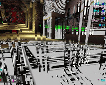

- computer -
|
If you come across any links to programs that don't have a freeware version, let me know and I'll remove it from the site, click here. Form Filler NEVER fill in a form or password again. Call Forwarding Call notification if someone phones while you're online complete with voice message you hear on your computer speakers It's FREE CallWave Click Here. Pay On Other Sites BOOKS A very good selection of internet and computer books Any other subject too Over a million books CDs and videos Amazon. . |
|
It is not in any way responsible, and has no legal liability, in respect of the contents of any other site referenced from this site. . What's On - Computer Events Find a Book Technology Futures Computer Magazines IT Publishers Looking for a Job. Major international companies and organizations have bookmarked CompInfo as their starting point for quickly locating IT inform ation, covering computer and communications hardware and software. Read the summary, explore the site, and we think you'll see why. |
|
referred to on this site is acknowledgedWebmaster . . What's On - Computer Events Find a Book Technology Futures Computer Magazines IT Publishers Looking for a Job. ZIP) - File Transfer (FTP) - File Viewers - Lotus SmartSuite - Microsoft Office - Office Suites - Personal Information Managers - Presentation Graphics - Project Management - Speech Recognition - Spreadsheets - StarOffice - Teleworking - Translation Software - VideoConferencing - WordPerfect Office - Word Processors. It is not in any way responsible, and has no legal liability, in respect of the contents of any other site referenced from this site, nor for information provided through that site. |
|  |
If you find a cheaper deal elsewhere, please let us know. Save money on the world's largest online marketplace. Great prices - Computer Software Compare prices and find the best online deals instantly with www. Add-On Products - IT software and technology A Danish IT company with its headquarters in Vejle. Our development department primarily works to provide customer-specific solutions using Microsoft technology. |
read more at: http://www.emodhost.com/cgi-bin/redir?C34Acron*http://www.compinfo-center.com/keyw/computer_acronyms.htm